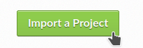
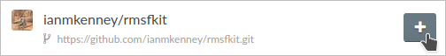
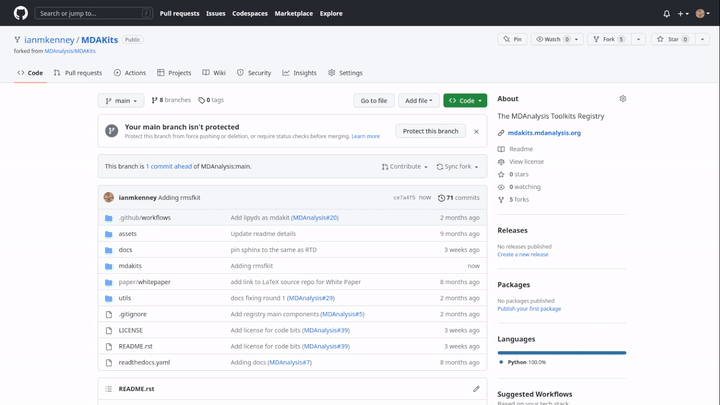

Making an MDAKit
Here, we outline the process of creating an MDAKit that fulfills all of the requirements for acceptance into the MDAKit registry. For a video walk-through of this tutorial, watch our recorded tutorial on YouTube.
Unlike the code in the core MDAnalysis library, the structure of an MDAKit is much less restrictive. In order to be accepted, there are several requirements that must be addressed:
Code in the package uses the MDAnalysis library
The code is open source and published under an OSI approved license
Code is versioned and provided in an accessible version-controlled repository (GitHub, GitLab, Bitbucket, etc.)
Code authors and maintainers are clearly designated
Minimal documentation is provided (what your code does, how to install it, and how to use it)
At least minimal regression tests are present; continuous integration is encouraged
It is also highly encouraged that the MDAKit also satisfies:
Code is installable as a standard package
Information on bug reporting, user discussions, and community guidelines is made available
These requirements ensure that registered packages are FAIR-compliant and hold up to an ideal scientific standard. Without prior experience, some of the requirements listed above can be daunting. To aid in this process, we make use of the MDAKit cookiecutter in this example.
Building from the cookiecutter
The MDAKits cookiecutter template (using the Cookiecutter tool) can be used to rapidly develop a FAIR-compliant MDAKit by generating placeholder code for documentation, testing, and installation. While its usage is outlined in detail in the MDAKit cookiecutter documentation, here we provide a full walk-through for creating an RMSF analysis kit, recreating the functionality of the RMSF analysis class in the core library.
Starting from an environment with Python 3.9+ and the Cookiecutter tool, the MDAKit template is generated using
$ cookiecutter gh:MDAnalysis/cookiecutter-mdakit
project_name [ProjectName]: rmsfkit
repo_name [rmsfkit]:
package_name [rmsfkit]:
description [A short description of the project.]: A package to perform RMSF analysis on molecular dynamics data.
github_username [Your personal GitHub username]: myusername
github_host_account [GitHub account for hosting rmsfkit (e.g. myusername or an organization account). Press Enter to use myusername]:
author_name [Your name (or your organization/company/team)]: Firstname Lastname
author_email [Your email (or your organization/company/team)]: myemail@email-provider.com
Select dependency_source:
1 - Prefer conda-forge over the default anaconda channel with pip fallback
2 - Prefer default anaconda channel with pip fallback
3 - Dependencies from pip only (no conda)
Choose from 1, 2, 3 [1]:
Select include_ReadTheDocs:
1 - y
2 - n
Choose from 1, 2 [1]:
template_analysis_class [Class name to template (e.g. Rmsfkit ). Press Enter to skip including analysis templates]:
This generates a new git repository named rmsfkit (note that the author of the initial commit will match that of the user’s global git configurations).
Navigating into this directory, we find the following notable files and directories:
LICENSE – defaults to GLPv2+
pyproject.toml – pip dependencies
MANIFEST.in – Packaging information
README.md – Project description and typically landing page content rendered on GitHub
docs/ – Sphinx documentation template, instructions and build environment documented within!
rmsfkit/ – Python package source code template
setup.py – Installation configuration file
See the cookiecutter documentation for information on additional files. Using the cookiecutter checks off a couple of the requirements for a valid MDAKit right from the start:
Open source code is published under an OSI approved license [defaults to GPLv2]
Code authors and maintainers are clearly designated (assuming that the maintainer and the author are the same person)
Code is installable as a standard package (optional feature)
Information on bug reporting, user discussions, and community guidelines is made available (optional feature)
Adding our code to the newly created repository
Since we are recreating the RMSF analysis, we are simply copy and pasting the
analysis class into the rmsfkit/rmsfkit.py file, where the documentation has been
trimmed for the sake of brevity. Documentation is written in reStructuredText syntax
syntax for building with Sphinx. The contents of the file should now resemble
the following code block:
"""
rmsfkit.py
A package to perform RMSF analysis on molecular dynamics data.
All code and documentation, both of which are trimmed for the sake of brevity,
are taken from the MDAnalysis Python package. Used under GPLv2+.
"""
from MDAnalysis.analysis.base import AnalysisBase
import numpy as np
class RMSF(AnalysisBase):
r"""Calculate RMSF of given atoms across a trajectory.
Note
----
No RMSD-superposition is performed; it is assumed that the user is
providing a trajectory where the protein of interest has been structurally
aligned to a reference structure. The protein also has to be whole because
periodic boundaries are not taken into account.
Run the analysis with :meth:`RMSF.run`, which stores the results in the
array :attr:`RMSF.results.rmsf`.
"""
def __init__(self, atomgroup, **kwargs):
r"""Parameters
----------
atomgroup : AtomGroup
Atoms for which RMSF is calculated
verbose : bool (optional)
Show detailed progress of the calculation if set to ``True``; the
default is ``False``.
Raises
------
ValueError
raised if negative values are calculated, which indicates that a
numerical overflow or underflow occurred
Notes
-----
The root mean square fluctuation of an atom :math:`i` is computed as the
time average
.. math::
\rho_i = \sqrt{\left\langle (\mathbf{x}_i - \langle\mathbf{x}_i\rangle)^2 \right\rangle}
No mass weighting is performed.
This method implements an algorithm for computing sums of squares while
avoiding overflows and underflows :cite:p:`Welford1962`.
References
----------
.. bibliography::
:filter: False
Welford1962
"""
super(RMSF, self).__init__(atomgroup.universe.trajectory, **kwargs)
self.atomgroup = atomgroup
def _prepare(self):
self.sumsquares = np.zeros((self.atomgroup.n_atoms, 3))
self.mean = self.sumsquares.copy()
def _single_frame(self):
k = self._frame_index
self.sumsquares += (k / (k+1.0)) * (self.atomgroup.positions - self.mean) ** 2
self.mean = (k * self.mean + self.atomgroup.positions) / (k + 1)
def _conclude(self):
k = self._frame_index
self.results.rmsf = np.sqrt(self.sumsquares.sum(axis=1) / (k + 1))
if not (self.results.rmsf >= 0).all():
raise ValueError("Some RMSF values negative; overflow " +
"or underflow occurred")
To make our RMSF analysis class easier to access, we import it in __init__.py. Add
from .rmsfkit import RMSF
This satisfies the first MDAKit requirement (“code in the package uses MDAnalysis”).
Filling in tests
Once again, we take directly from the MDAnalysis package.
Here we take the RMSF testing class and update the contents of rmsfkit/tests/test_rmsfkit.py to reflect the following code block:
"""
Unit and regression test for the rmsfkit package.
The TestRMSF class was taken from the MDAnalysis rms tests file and
the relevant modules were switched.
"""
# Import package, test suite, and other packages as needed
from MDAnalysisTests.datafiles import GRO, XTC, rmsfArray
import MDAnalysis as mda
from numpy.testing import assert_equal, assert_almost_equal
import numpy as np
import os
import pytest
import rmsfkit
import sys
def test_rmsfkit_imported():
"""Sample test, will always pass so long as import statement worked"""
assert "rmsfkit" in sys.modules
class TestRMSF(object):
@pytest.fixture()
def universe(self):
return mda.Universe(GRO, XTC)
def test_rmsf(self, universe):
rmsfs = rmsfkit.RMSF(universe.select_atoms('name CA'))
rmsfs.run()
test_rmsfs = np.load(rmsfArray)
assert_almost_equal(rmsfs.results.rmsf, test_rmsfs, 5,
err_msg="error: rmsf profile should match test "
"values")
def test_rmsf_single_frame(self, universe):
rmsfs = rmsfkit.RMSF(universe.select_atoms('name CA')).run(start=5, stop=6)
assert_almost_equal(rmsfs.results.rmsf, 0, 5,
err_msg="error: rmsfs should all be zero")
def test_rmsf_identical_frames(self, universe, tmpdir):
outfile = os.path.join(str(tmpdir), 'rmsf.xtc')
# write a dummy trajectory of all the same frame
with mda.Writer(outfile, universe.atoms.n_atoms) as W:
for _ in range(universe.trajectory.n_frames):
W.write(universe)
universe = mda.Universe(GRO, outfile)
rmsfs = rmsfkit.RMSF(universe.select_atoms('name CA'))
rmsfs.run()
assert_almost_equal(rmsfs.results.rmsf, 0, 5,
err_msg="error: rmsfs should all be 0")
Since these tests use files included with the MDAnalysisTests package,
we need to add it as a dependency in devtools/conda-envs/test_env.yaml.
Additionally, we need to add this dependency to the pyproject.toml
file. Under the [project.optional-dependencies] table, ensure that
MDAnalysisTests>=2.0.0 is listed in test.
[project.optional-dependencies]
test = [
"pytest>=6.0",
"pytest-xdist>=2.5",
"pytest-cov>=3.0",
"MDAnalysisTests>=2.0.0",
]
These tests also need to be reflected in the extra_requires dictionary in setup.py:
extras_require={
"test": [
"pytest>=6.0",
"pytest-xdist>=2.5",
"pytest-cov>=3.0",
"MDAnalysisTests>=2.0.0" # add this
],
"doc": [
"sphinx",
"sphinx_rtd_theme",
]
}
Confirm that the code and tests work
Up until this point we haven’t tested any of the code. Following the the
instructions from the generated README.md, we can create a testing
environment using conda or mamba (recommended).
$ mamba create -n rmsfkit
$ mamba env update --name rmsfkit --file devtools/conda-envs/test_env.yaml
$ pip install -e .
This installs the package as well as the testing environment. We can run tests locally using:
$ pytest rmsfkit/tests
This should pass without errors, but with some potential warnings. Local
tests passing is only half of the testing requirement for an MDAKit. To fully
satisfy the MDAKit testing requirement, tests must also pass through continuous
integration services. The cookiecutter generates the necessary GitHub workflow
files and can be found in .github/workflows/gh-ci.yaml. Since our tests use
the MDAnalysisTests package, we need to make one change to this file.
Change the block
- name: Install MDAnalysis version
uses: MDAnalysis/install-mdanalysis@main
with:
version: ${{ matrix.mdanalysis-version }}
install-tests: false
installer: mamba
shell: bash -l {0}
to
- name: Install MDAnalysis version
uses: MDAnalysis/install-mdanalysis@main
with:
version: ${{ matrix.mdanalysis-version }}
install-tests: true # this needs to be true!
installer: mamba
shell: bash -l {0}
Finishing up the tests
Our code only exists locally, but will need to be uploaded to a GitHub to run
the prebuilt continuous integration provided by the cookiecutter. During the
cookie generation process, the target GitHub repository was identified and
inserted into the workflows configuration as well as the README.md file. Add
this repository as a remote to your local git repository,
$ git remote add origin git@github.com:myusername/rmsfkit
substituting myusername for your GitHub username. Make sure that this repository exists on GitHub and is empty.
$ git push origin main
Open the repository in GitHub and navigate to actions. Here you can see the status of the tests. If all was done correctly in the previous sections, these tests will pass!
After this point, two more requirements are satisfied:
Code is versioned and provides in an accessible version-controlled repository
Tests and continuous integration are present
Providing documentation
The cookiecutter includes a Read the Docs
configuration as well a premade documentation environment file that is used by
Read the Docs and for building locally. First, we need to install the correct
environment for building the documentation. In the docs/ directory, run:
mamba env update --name rmsfkit -f requirements.yaml
We can now build the documentation HTML files using the included Makefile. Without looking at any of the documentation source files, run:
make html
This will convert the reStructuredText files into HTML in the _build directory.
Open index.html and look around.
Notice that the “API Documentation” does not contain all of the information found in the docstrings of our code.
This is because within source/api.rst, the only contents are:
API Documentation
=================
.. autosummary::
:toctree: autosummary
rmsfkit
Instead, it should contain:
API Documentation
=================
.. autosummary::
:toctree: autosummary
rmsfkit.RMSF
After making the change, rerun make html and refresh the page. There will
now be a table entry for the RMSF class. Clicking this entry will open the
documentation that was present in the docstrings! Other than the newly visible
docstring contents, the rest of the documentation is completely empty. Let’s
update the index.rst file to include a short description of the package:
Welcome to rmsfkit's documentation!
=========================================================
``rmsfkit`` is an example MDAKit that implements the functionality of the `analysis.rms.RMSF` class within the MDAnalysis package.
This MDAKit does not serve as a replacement for this functionality and using this MDAKit for real work is discouraged.
.. toctree::
:maxdepth: 2
:caption: Contents:
getting_started
api
Indices and tables
==================
* :ref:`genindex`
* :ref:`modindex`
* :ref:`search`
Additionally, we can update getting_started.rst to let potential users know how to install the package.
Getting Started
===============
The ``rmsfkit`` package is installable from source.
.. code-block:: bash
git clone git@github.com:ianmkenney/rmsfkit.git
cd rmsfkit/
pip install .
Run the make html command again and refresh the browser window to view the resulting changes.
You’ll notice the RMSF class documentation has an unformatted citation (:cite:p:`Welford1962`).
If your documentation need citations, you can easily include them using the bibtex format.
We first create the bibtex file, references.bib in the doc/source/ directory:
@article{Welford1962,
author = { B. P. Welford},
title = {Note on a Method for Calculating Corrected Sums of Squares and Products},
journal = {Technometrics},
volume = {4},
number = {3},
pages = {419-420},
year = {1962},
publisher = {Taylor & Francis},
doi = {10.1080/00401706.1962.10490022}
}
In conf.py, we need to add a new extension (sphinxcontrib.bibtex) as well as the name of the bibtex file.
extensions = [
'sphinx.ext.autosummary',
'sphinx.ext.autodoc',
'sphinx.ext.mathjax',
'sphinx.ext.viewcode',
'sphinx.ext.napoleon',
'sphinx.ext.intersphinx',
'sphinx.ext.extlinks',
'sphinxcontrib.bibtex', # add this line
]
bibtex_bibfiles = ['references.bib']
In addition, we have to add this extension the install requirements in docs/requirements.yaml.
Add - sphinxcontrib-bibtex as an additional dependency here.
Update your environment with
mamba env update --name rmsfkit -f requirements.yaml
before once again running make html. Refreshing the RMSF documentation will now show a properly formatted citation using the information in the bibtex file.
Deploying the documentation
Log into Read the Docs and navigate to the dashboard. Click the “Import a Project” button and find the repository in the list. Click the “+” and confirm that the name, URL, and default branch are correct.
 Clicking next will begin the deployment. This immediately starts the build
process, which can be confirmed by clicking the “Builds” tab. Once the build is
completed, you can view the deployed documentation, which is now public. This
completes the documentation requirement for an MDAKit. Notice that the “docs”
badge in the GitHub rendered README.md is now green.
Making an initial release
The MDAKit cookiecutter uses the versioneer utility for version management.
In brief, software versions are set through git tags.
Since the kit is initiated without tags, the current version is set to 0.0.0.
>>> import rmsfkit
>>> rmsfkit.__version__
'0+untagged.3.g3eed836'
We can bump this to a 0.1.0 in preparation for an initial release on GitHub.
$ git tag 0.1.0
This should now be reflected in the interpreter (may require a package reinstall):
>>> import rmsfkit
>>> rmsfkit.__version__
'0.1.0'
Tags are not pushed to remote repositories by default. To push the 0.1.0 tag, use:
$ git push --tags
Viewing the repository tags page on GitHub, you should now see a 0.1.0 tag, which can then be used to create a release by expanding its menu options.
Enter a release name, such as v0.1.0 and publish!

Building from an existing project
Registering an existing package as an MDAKit is a straightforward process. Since the structure of an MDAKit is not as strict as the code found in the MDAnalysis core library, chances are very little restructuring is needed for registration. The primary concern is ensuring that the core MDAKit requirements are met, as listed at the top of this document.
Licensing
One of the more pressing requirements for kit registration is clearly identifying the license that is applied to your code. This is typically included in a LICENSE file at the top level of your repository. Without a license, the only assumption a user can make about your code is that they are not in a position to use your code. Your license needs to be compatible with the GPLv2+ license currently used by MDAnalysis, in addition to the licenses of any other packages your mdakit depends on. Take time to consider how you would like to license your project. Take time to consider how you would like to license your project. Further information on open source licensing can be found from sources such as: choose a license, tl;dr Legal, the Open Source Initiative, and the Software Sustainability Insitute.
Hosting code in a version controlled repository
Since the MDAKits registry makes heavy use of the GitHub actions infrastructure, registration of a kit requires that all code maintainers also have a GitHub account for communication purposes.
For this reason, if your code is not already hosted in an accessible version controlled repository, hosting on GitHub is recommended, although other services such as Bitbucket, GitLab, or self hosting is possible.
The registry does not require that your code be available through packaging repositories such as the Python Package Index or conda-forge, although having your code available through these services is highly encouraged.
After registration, users can find the installation instructions for the source code on your MDAKit page, which is specified in the src_install field in the metadata.yaml file (see Specification of the metadata.yaml file).
Documentation
Basic documentation is required for MDAKit registration. The detail and depth of the documentation is ultimately up to you, but we require at a minimum that you provide README-style documentation explaining what the code is supposed to do, how to install it, and the basics of its use. Although this is the minimum, we highly recommend that you consider generating your documentation with dedicated tools such as Sphinx, which allows you to generate static documentation using reStructuredText formatted plain-text directly from your code. This makes it easier for your documentation to change alongside code changes.
Using a documentation hosting service such as Read the Docs or GitHub Pages makes public access to your generated documentation automatic.
Testing
We also require that minimal regression tests are present. These tests are not just useful for when you make changes to your code, but also when any package dependencies (e.g. MDAnalysis, NumPy, and Python) change. Additionally, tests inform the users of your packages that the code performs at least the way you say it should and give them confidence that it can be used. Basic tests can be written with a variety of packages, such as the pytest package (the default choice for MDAnalysis organization projects) or the unittest package. Further improvements to your testing procedure may include automatically running the tests on pushing to your remote repositories, often referred to as continuous integration (CI). CI can be set up using repository pipeline tools, such as GitHub Actions.
When submitting an MDAKit to the registry, include the instructions for running the tests in the required metadata.yaml file (see a full example in the registration section below).
Assuming that your tests are in a test/ directory at the top level of your repository, you could define your test commands as:
run_tests:
- git clone latest
- pytest -v tests/
This makes a clone of your repository based on your latest release tag on GitHub and navigates into the repository root. Note that this is not a true git command, but is instead specific to the MDAKits registry workflow and depends on the project_home field in the metadata.yaml file (see Specification of the metadata.yaml file).
The pytest command then runs the tests found inside the tests/ directory.
If your tests are elsewhere, change this path appropriately.
Dependencies that are only required for testing are indicated in the test_dependencies object.
Suppose your package uses pytest and used the MDAnalysisTests for sample data.
This is reflected in your MDAKit metadata with
test_dependencies:
- mamba install pytest MDAnalysis
Registering an MDAKit
The MDAKit registration is the same regardless of the creation process for the kit.
For simplicity, the follow examples will reference the rmsfkit MDAKit created in the cookiecutter section.
In order to submit your MDAKit to the registry, you will need to create a pull request on GitHub against the MDAnalysis/MDAKits repository.
Do this by creating a fork of the MDAnalysis/MDAKits repository.
Clone the fork to your machine, navigate into MDAKits/mdakits/, and make an empty directory with your MDAKit name:
git clone git@github.com:yourusername/MDAKits
cd MDAKits/mdakits
mkdir rmsfkit/
cd rmsfkit
Add the metadata.yaml for your MDAKit in this directory (see
Specification of the metadata.yaml file for details).
The contents of metadata.yaml for rmsfkit are:
project_name: rmsfkit
authors:
- https://github.com/yourusername/rmsfkit/blob/main/AUTHORS.md
maintainers:
- yourusername
description:
An analysis module for calculating the root-mean-square fluctuation of atoms in molecular dynamics simulations.
keywords:
- rms
- rmsf
license: GPL-2.0-or-later
project_home: https://github.com/yourusername/rmsfkit
documentation_home: https://rmsfkit.readthedocs.io/en/latest/
documentation_type: API
## Optional entries
src_install:
- git clone https://github.com/yourusername/rmsfkit.git
- cd rmsfkit/
- pip install .
python_requires: ">=3.9"
mdanalysis_requires: ">=2.0.0"
run_tests:
- pytest --pyargs rmsfkit.tests
development_status: Beta
Commit and push this to your fork:
git add metadata.yaml
git commit -m "Adding rmsfkit"
git push origin main
Refresh the forked repository page in your browser. Under “Contribute”, open a pull request. Add a title with the name of the kit and add a quick description. Click “Create pull request” and wait for the tests to pass. Once this is done, you can add a comment along the lines of “@MDAnalysis/mdakits-reviewers, ready for review”. The reviewers will get back to you with any change requests before merging it in as a kit. At this point there are no additional steps for registering your kit!
Maintaining a kit
There are a variety of reasons a kit may behave unexpectedly after being submitted to the registry. Apart from actively developing the kit, changes in kit dependencies, or even Python itself, can introduce (deprecate) new (old) functionality. For this reason, the kits’ continuous integration is rerun weekly to confirm the kits expected behavior. In the event that a kit no longer passes its tests, an issue in MDAnalysis/MDAKits is automatically raised while notifying the maintainers indicated in the metadata.yaml file. While the registry developers will be happy to help where possible, ultimately, the maintainers of the MDAKit are responsible for resolving such issues and ensuring that the tests pass. The issue will automatically close after the next CI run if the tests pass again.